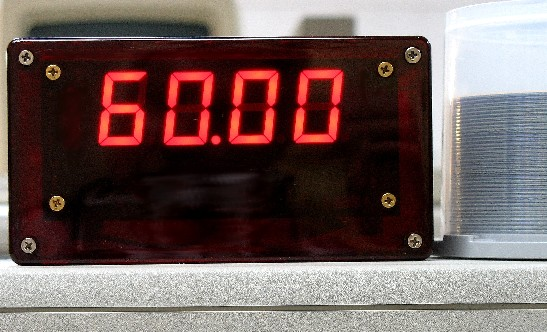
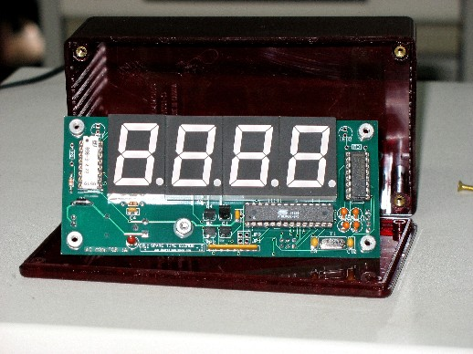

AC Frequency Monitor
AC Frequency Monitor


|
|
Read all about the AC Monitor Project in the October 2006 issue of Nuts & Volts Magazine!!
 This project is essentially a frequency counter, adapted specifically for measuring the AC power line frequency. Why bother? After all, it's always 60Hz, right? (Unless, of course, you live in one of those countries where it's 50Hz). That's pretty much true, but how close to 60Hz is it really? This is more than just an academic question (although simple curiosity alone is plenty of justification for a Spare Time Gizmo!) since there are electronic devices, most notably clocks, that use the AC power frequency as a time base. This gizmo will answer that, by displaying the instantaneous power frequency to a resolution of 0.01Hz. That's more than enough to see small variations over time, although don't expect to see wild swings. Here in the Western USA, the power grid seems to pretty much stay between 59.97 and 60.03. Other places may not be quite so stable and, if you're using your own generator (e.g. in the case of a power failure, at Field Day, while camping, whatever), then things can get interesting. In the olden days, the utility companies would regulate the frequency of the power grid over the long term. So, if there were periods when the load on the system was high and the frequency dropped a bit, the utilities would make up the missed cycles with a slightly higher frequency when the system load was light. The goal was to always have the same total number of AC cycles per day, specifically so that clocks would keep correct time. I've no idea whether the utilities still do this - a lot of clocks today, even AC powered ones, use a Quartz crystal time base - but you can use this project to find out. You can do this because the AC Monitor also has an RS-232 serial port, and once a minute it logs time based on the AC power line reference. By comparing the time logged with a more accurate clock, you can figure out a plot of the AC power drift over time. Where do you find a more accurate clock? It's easy, actually - your PC, synchronized to an Internet time server, can give you the long term accuracy you need. I haven't done this yet - I'm quite lazy when it comes to writing software - so if you do it first be sure to write and let us know and we'll be happy to post your results on this web page.
Construction Hints and Article ErrataThe AC Monitor works perfectly well in 50Hz countries too - it will automatically detect and adjust to either a 50 or 60Hz nominal frequency. The PC board and the schematic shown here (although not the one published in the article) also shows the components LED1, LED2, JP1, JP2, R3, and R4. These are not used by the current firmware.
 The seven segment LED displays I used, and the ones that fit the PC board, are Stanley Electric model NKR105B. They're available from Digi-Key as catalog number 404-1127-ND. They're a bit pricey, but absolutely gorgeous and very, very bright. Other displays will undoubtedly fit and work, but be sure you get ones with the pins along the top and bottom edges. There are also many displays with pins along the left and right sides, and those clearly won't fit the PC board. Of course, if you intend to hand wire an AC Monitor, then this isn't important.We'll sell you a preprogrammed AVR microprocessor if you want one, but they're quite easy to program yourself. All you need is the software for your PC, which is free, and the AVRISP2 programming dongle - only $34 from Digi-Key. With the AVRISP2 you can program the chip right there on the AC Monitor PC board, in circuit, and no special programmer is required. And, of course, once you can program your own microprocessor, you can change the firmware!
PurchasePlease read the Spare Time Gizmos store policies before ordering. Shipping charges shown are for the US only - international customers please inquire before ordering. Sales tax must be charged on all shipments to California addresses.
|
Visit these Spare Time Gizmos
|